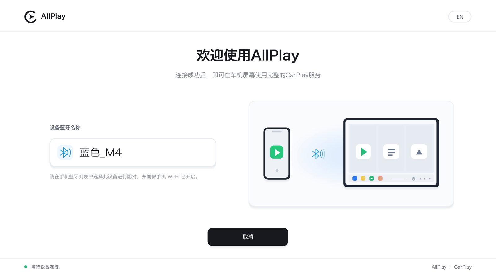

C++17 · 协议实现
把车机变成
CarPlay 接收端。
AllPlay 端到端实现手机侧的协议栈——AirPlay RTSP、iAP2、MFi-SAP、USB lockdown/TLS 和 Android Auto AAP——本地解码 H.264 与 AAC-LC，并把触摸作为 HID 报告回传。 不含任何 Apple 二进制或 Apple 代码。

4协议后端
5平台目标
13.7k与平台无关核心的代码行数
0Apple 二进制或代码
今天已跑通的
如实标注：硬件验证、协议完整、仅有接口，三者严格区分。
硬件验证
无线 CarPlay
蓝牙 iAP2 触发 → mDNS 发现 → RTSP 协商 → 加密 H.264/AAC 流 → 触摸与媒体按键。
硬件验证
有线 CarPlay
USB 配置切换 → usbmux v2 → lockdown → 原地 TLS → com.apple.carkit.service → iAP2 → 内核 NCM 媒体面。
协议完整
有线 Android Auto
AOAP 51/52/53 → AAP VERSION → TLS 1.2 → 服务发现 → 控制、视频、音频、输入通道。尚待真机验证。
有意分层
core/ 不含任何平台头文件，只有一个第三方依赖（OpenSSL）。每个平台都是它的适配层。
传输USB · RFCOMM · TCP · mDNS
会话iAP2 · MFi-SAP · lockdown · TLS
流媒体RTSP · RTP · AES-CTR · ChaCha20
媒体H.264 · AAC-LC · Opus · LPCM
主机SDL2 · Android · HarmonyOS
构建与测试
Linux 需要平台头文件；仅核心构建只需要 OpenSSL 和 C++17 编译器。
sudo apt-get install -y cmake g++ pkg-config libssl-dev \
libavahi-client-dev libbluetooth-dev libdbus-1-dev \
libusb-1.0-0-dev libsdl2-dev libsdl2-ttf-dev \
libavcodec-dev libavutil-dev libswscale-dev
scripts/build.sh
./build/iap2_test && ./build/m3_test && ./build/aa_wire_test凭据前提
两条 CarPlay 路径的最后一道门都是 Apple 签发的 MFi 身份。
identity/（EC P-256 私钥 + Apple 证书）不在本仓库中，也不受 GPL 覆盖。
请自备；自签名身份可以在开发阶段走通链路，但不是产品路径。AllPlay 不是 Apple 产品，
也未获得 MFi 授权。
设计文档
长期文档与代码放在一起，并与代码保持同步。